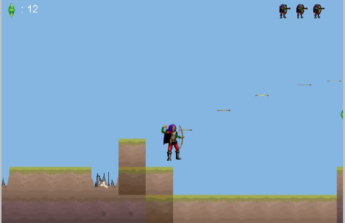
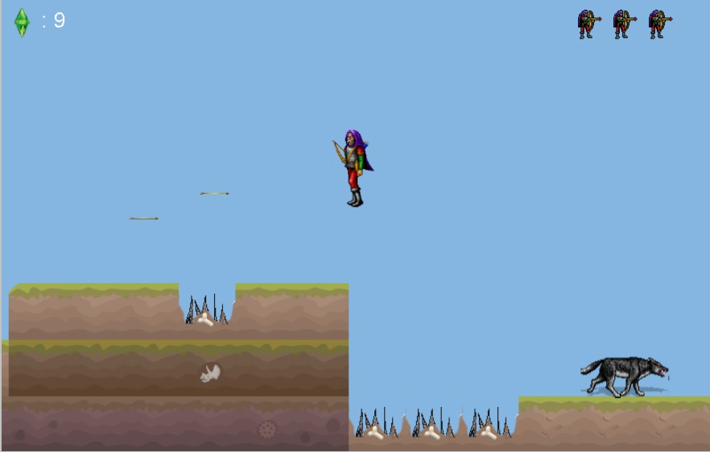
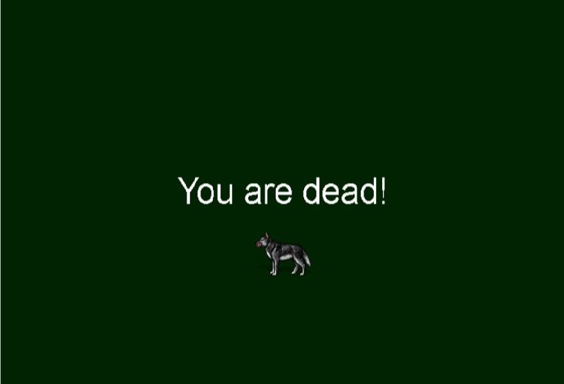
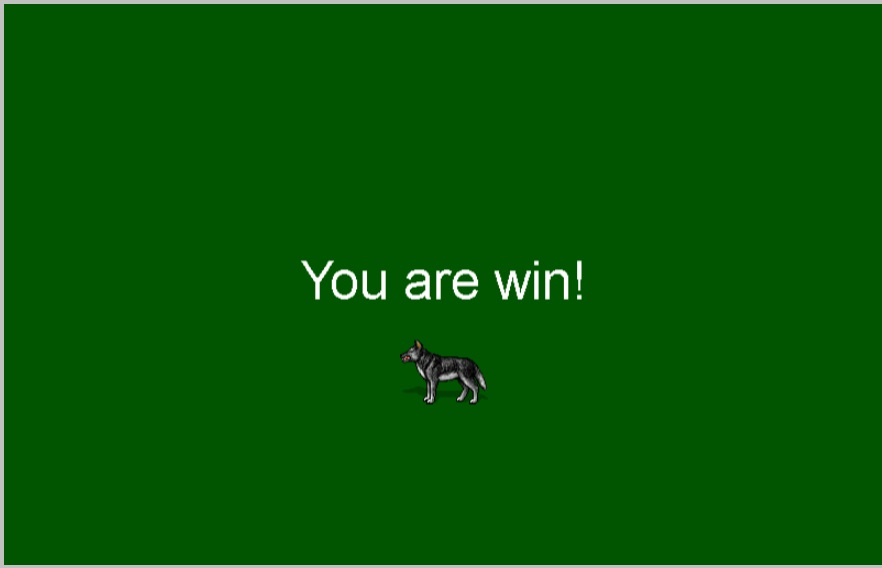

Shots and description of the game:
Your enemies are wolves, which walk on the hills. To kill them you should use your bow and arrows. You can shot in flying and in different directions simultaneously.


By the way, the number of your crystals from the first level goes into the second one.
If you fall in the snare more than three times or wolf bit you more than three times - you will dead. Be careful and look after indiсators of your lives.
If you fall in the snare more then tree times or wolfs bit you mere then three times - you will dead. Be careful and look after indikators of your lifes.
If you can survive in all levels - you will win the game!
